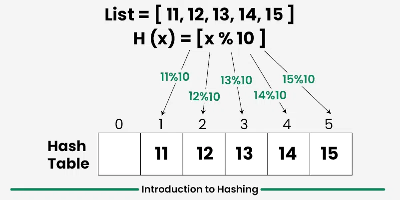

ELO320 - Estructuras de Datos y Algoritmos
Marie González-Inostroza
Estructura de datos en la que las operaciones de inserción, búsqueda y eliminación son muy rápidas, independientemente del tamaño de los datos.
Diseñadas originalmente para resolver el problema de búsqueda $\rightarrow$ basada en arreglos, pero sin trabajar con el índice.
Hoy en día, las tablas hash son usadas en múltiples aplicaciones:
El conjunto $D$ formado por tuplas llave-valor $(k.v)$, se almacena en un arreglo $A$.
$$ D = \{(k_1,v_1), (k_2,v_2), \dots (k_n, v_n) \} $$
El índice del arreglo asociado a un par se obtiene aplicando una función de transformación $H(k)$, llamada función hash.
$$ H: D_k \rightarrow \{1, 2, 3, \dots, m\}$$ $$ A[H(k_i)] = v_i;\ \forall i \in \{1,2,3,\dots,n\} $$

Fuente:
int search(int array[10], char *key){
return array[hash(key)];
}
void insert(int array[10], char *key, int value){
array[hash(key)] = value;
}
void remove(int array[10], char *key){
array[hash(key)] = NULL;
//NOTA: Esto es conceptual,
//C no permite NULL en int arrays directamente
}
Debe mapear las llaves $k$ a índices del arreglo $A$ de tamaño $m$.
Se busca que sea:
Técnicas heurísticas comunes:
En este método las claves son transformadas en índices del arreglo mediante el uso de resto aritmético o módulo sobre el largo del arreglo $m$:
$$ h(k) = k\ \mathrm{mod}\ m$$
La recomendación general es usar un largo de arreglo $m$ que no esté relacionado con la distribución de llaves. Por lo general, se elige un número primo.
Este método minimiza la dependencia del tamaño $m$ y se compone de los siguientes pasos:
$$ h(k) = \lfloor m \times ((k\times \alpha)\ \mathrm{mod}\ 1) \rfloor $$
En este caso, el tamaño de $m$ no es crítico. Esto permite que comúnmente se use una potencia de dos para el tamaño del arreglo: $m = 2^p$.
Utilizamos los valores ASCII de los caracteres para generar un valor numérico.
$$h = 104,\ a=97,\ s=115$$
$$104+97+115+104 = 420 $$
$$(104\times 128^3) + (97 \times 128^2) + (115\times 128^1) + (104\times 128^0) = 219707880 $$
Implementa la función hashFuncion para definir dónde se guarda cada código EAN.
Completa el código base act14-1.c: https://classroom.github.com/a/cfH8TnTH
Dos llaves pueden ser asignadas a un mismo índice por la función hash. Esto es lo que se llama conflicto.
El arreglo fijo, pasa a ser un arreglo de punteros, los cuales establecen una lista enlazada para almacenar los nodos en conflicto.
La búsqueda entonces es doble: en el arreglo y en la lista. Para evitar confusiones, en los nodos de la lista se guarda el par (llave, valor).
Aquí, se realizan corrimientos de la posición de inserción si hay un conflicto. Esto evita el uso de estructuras de datos adicionales, pero habrá que tener cuidado con el overflow de memoria.
Busca insertar el dato en el casillero disponible más cercano ($\text{posición} + 1, \text{posición} + 2, \dots$).
La búsqueda, por lo tanto, sigue un proceso similar: parte de la posición entregada por la función hash, avanzando de forma lineal hasta encontrar el dato correcto.
Un problema del sondeo lineal es que los datos tienden a agruparse ("clustering"). Para evitar esto, la misma técnica se aplica pero buscando en saltos cuadráticos (e.g., $1^2, 2^2, 3^2$) o cada $C$ casilleros (Sondeo Doble).
La búsqueda, por lo tanto, sigue un proceso similar: parte de la posición entregada por la función hash, avanzando según la secuencia de saltos hasta encontrar el dato correcto.
Implementa las distintas funciones que permitan guardar una base de datos de mascotas donde podrían existir conflictos al utilizar la tabla hash que se proponec.
Completa todos los ToDo del código base act14-2.c: https://classroom.github.com/a/cfH8TnTH